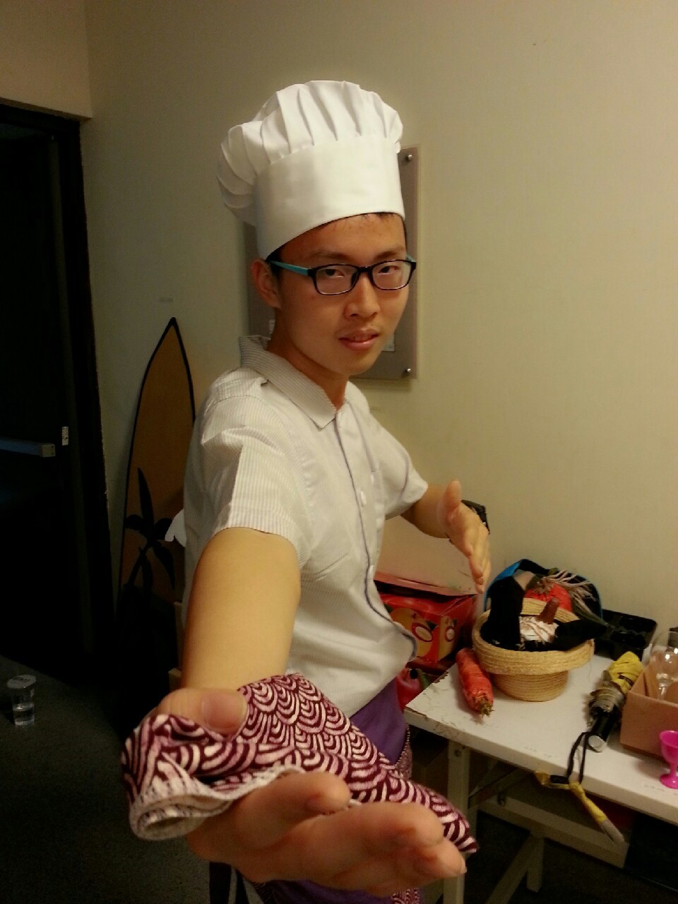
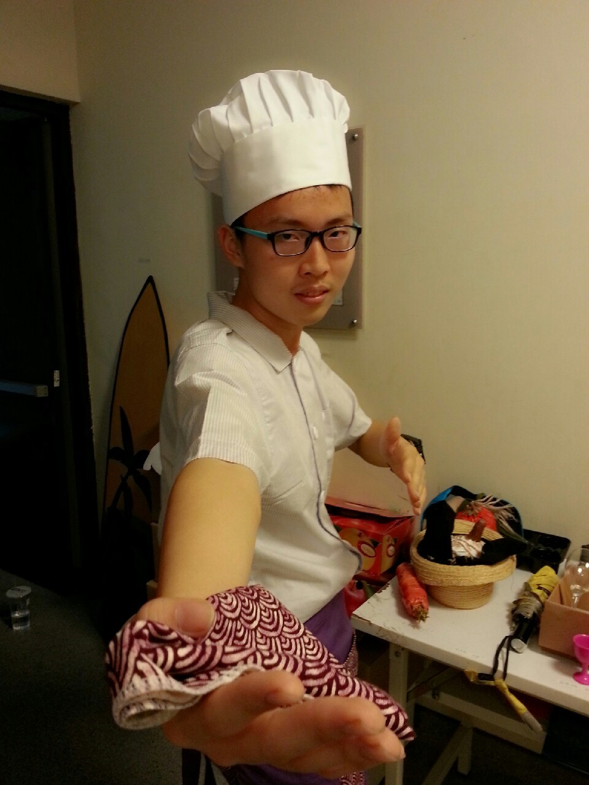

吳峻宇 Danny-Wu
大家好我叫吳峻宇!! 我來自嘉義 我相信人之所以能 是相信所能 我喜歡挑戰 每個人心中都有極限 他可能是你的榜樣 你的對手，甚至他就是你自己 面對他 挑戰他 超越他
I have high energy in doing the things that I like such as work out. I go to gym five days a week that is because I am passionate and like it.
經驗
參與草草戲劇節的演出
我喜歡戲劇喜歡站在舞台上的感覺，在台上我可以很自然地做自己，每次的演出都讓我感動不已，那種發自內心的把自己的故事演給觀眾看，感覺是非常踏實且純真的
擔任過話劇社社長
這是我高中以來職責最大的挑戰，我要學會如何與人溝通以及如何管控整個社團，雖然非常辛苦但都是值得，我也從中學習如何辦活動與如何與他人社交的能力
學歷Education
Sept .2008 ~ Jun 2013
嘉義市立志航國小
Sept .2013 ~ Jun 2015
嘉義市立民生國中
Sept .2015 ~ Jun 2017
國立嘉義高中
技能
- 創世基金會街頭募款
- 第八屆草草戲劇節 <春膳>擔任演員
- 嘉義高中話劇社擔任社長一職
- 大愛電視台擔任攝影實習生
興趣interests
(1)喜歡觀賞電視台公共電視上關懷人文紀錄片，與探討人性的訪談節目
(2)喜歡觀賞劇場演出，最喜歡的舞台，實驗劇場
(3)課後利用半小時慢跑鍛鍊自我意志力
(4)藉由戲劇演出而更加認識自我
(5)平日利用短暫的休息時間利用網路平台觀賞影片而增進觀察能力
(6)觀看VOICETUBE上的媒體來加強英文能力，並吸收國外文化的交流與事蹟
When forced indoors, I follow a number of sci-fi and fantasy genre movies and television shows, I am an aspiring chef, and I spend a large amount of my free time exploring the latest technolgy advancements in the front-end web development world.
Awards & Certifications 專長獎項
- 1st全國偶劇團特優
- 嘉義市環保劇演出優等獎
- 紫錐發反毒演出最佳個人獎
著作Publications
| 時間 | 劇名 | 地點 | 演出團隊 |
|---|---|---|---|
| 2018 | 《家的妄想》 | 嘉義縣民雄表演藝術中心 | 阮劇團 |
| 2018 | 第10界草草戲劇節《拾圓》 | 嘉義縣民雄表演藝術中心 | 素人演出 |
| 2017 | 水中之屋 | 嘉義縣民雄表演藝術中心 | 阮劇團 |
| 2017 | 《城市戀歌進行曲》 | 嘉義市中央廣場露天舞台 | 阮劇團 |
| 2017 | 第9屆草草戲劇節《布可以》 | 嘉義縣民雄表演藝術中心 | 素人演出 |
| 2017 | 2017嘉義小劇場戲劇節《劇本農場》IV讀劇演出 | 華山1914文創園區 | 阮劇團 |
| 2017 | 阮劇團-2017小地方演出計畫 | 全台各地偏鄉學校 | 素人與阮劇團 |
| 2017 | 《熱天酣眠》 | 嘉義縣民雄表演藝術中心 臺灣戲曲中心 |
阮劇團 |
| 時間 | 劇名 | 地點 | 演出團隊 |
|---|---|---|---|
| 2016 | 2016嘉義小劇場戲劇節《馬克白》 | 嘉義縣民雄表演藝術中心 | 阮劇團X流山兒★事務所 |
| 2016 | 2016嘉義小劇場戲劇節 《劇本農場》III 讀劇演出 | 嘉義縣民雄表演藝術中心 | 阮劇團 |
| 2016 | 阮劇團2016小地方演出計畫 | 全台各地偏鄉學校 | 素人與阮劇團 |
| 2016 | 阮劇團2016第八屆草草戲劇節《春膳》 | 嘉義縣民雄表演藝術中心 | 素人演出 |
| 2016 | 樹仔腳＿2016草草戲劇節OFF | 嘉義縣民雄表演藝術中心園區表演 | 壞鞋子舞蹈劇場＆農村武裝青年阿達 |
| 2015 | 阮劇團2015年度製作《愛錢A恰恰》 | 嘉義縣民雄表演藝術中心 | 阮劇團 |
| 2015 | 阮劇團2015劇本農場劇作選 III | 嘉義縣表演藝術中心 | 阮劇團 |
| 2015 | 《小地方2》 | 全台各地偏鄉學校 | 偏鄉演出計畫 |
| 2015 | 第七屆草草戲劇節《製圖器》 | 嘉義縣民雄表演藝術中心 | 素人演出 |
我的夢想 I have a dream
我希望我能為自己拍出一部紀錄片記錄自己的生活，分享每天的點點滴滴讓自己的後代都可以看到我的生活，給自己一個與別人不同的機會挑戰自己不敢做的事，相信自己的無限可能，打造出屬於自己的人生，與其羨慕他人的好，倒不如想想自己的獨特，萬物本是不同的個體，活在當下最重要，煩惱是一時的，快樂是一輩子的，
 
